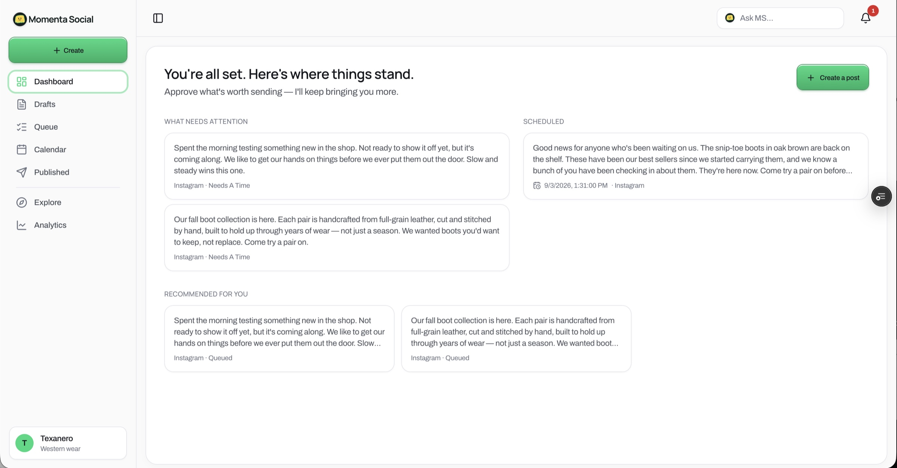
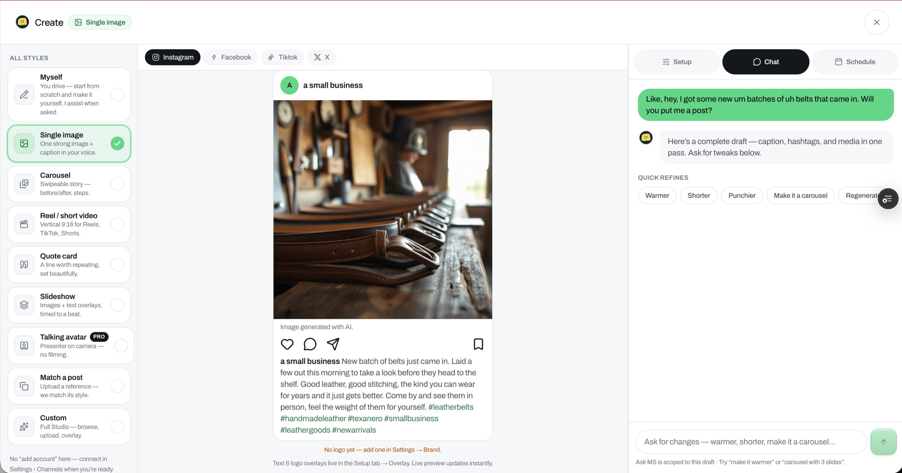
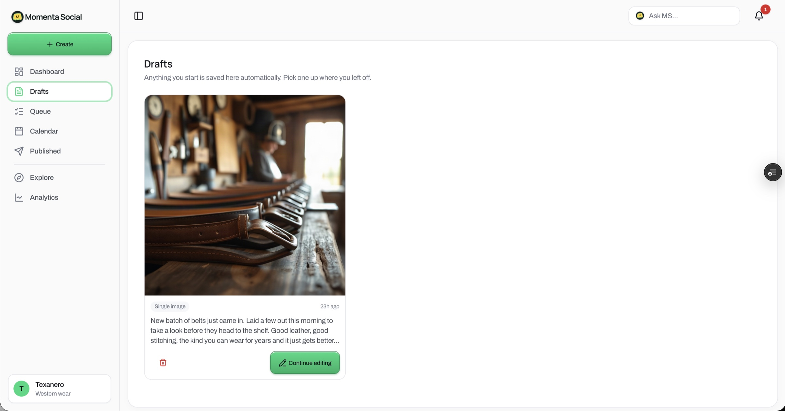
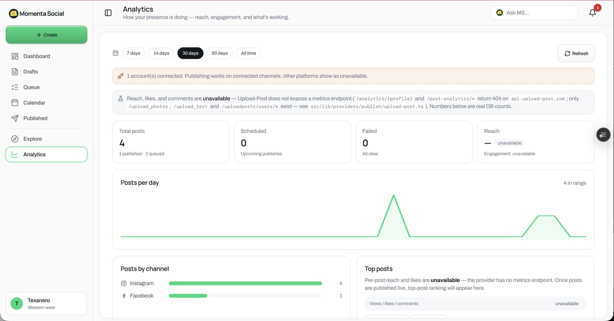
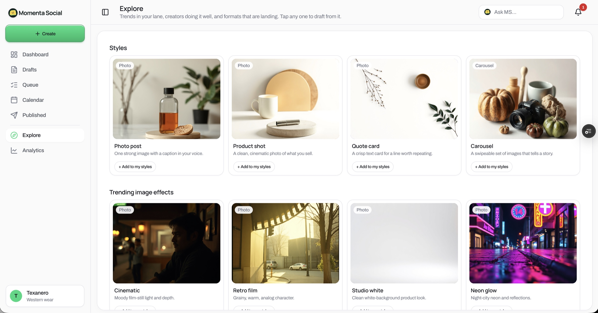

Most AI social tools begin with an empty box. I designed M Social around a different premise: the system should help make the content decision, not merely produce more content. The AI does the production work. The person decides what represents them.

The home experience is a feed of decisions, not a blank composer — what needs attention, what's scheduled, and what the system prepared, with a reason it matters now.
The problem was never a shortage of generated words. It was the amount of context a person had to carry.
Maintaining a social presence is not one task — it's a continuous chain of small decisions: notice an opportunity, decide whether it matters, find an angle, remember the brand voice, create the copy, source or generate media, adapt it to a platform, check it, schedule it, then watch what happened.
Most AI tools just placed a generator inside that existing workflow. The person still had to see the opportunity and assemble every step. The blank page remained the starting point — the writing got faster, the cognitive burden stayed intact. The more tools involved, the more the person became the integration layer between them.
The product question could have been “How can AI create social posts faster?” The more useful question became: how can the system recognize a meaningful reason to communicate, prepare the right response, and return a trustworthy decision to the person?
Other tools make content faster. M Social helps make the content decision — and shows its work.
The user's job shifts from authoring every step to deciding what should move forward.

A plain-language request — “I got new belts in, will you put me a post?” — returns a complete draft: caption, hashtags, and media in one pass, with the synthetic-media disclosure attached, ready to refine.
Signal → Intent → Action → Human decides → Outcome → Learning
A market moment, business event, content opportunity, scheduled need, or a direct request creates a reason to communicate.
The system connects that signal to the tenant's business, brand goal, audience, voice, channel, and current priorities.
M Social prepares the post, image, caption, hashtags, alt text, platform choice, and the appropriate compliance checks.
The person reviews the actual artifact and chooses whether it proceeds. Approval is attached to that exact version.
The approved post moves into the queue. External publishing stays in dry-run until the human send checkpoint is deliberately enabled.
The outcome can inform future recommendations, timing, brand behavior, and decision quality.

Copy and image are prepared as one coordinated artifact in the tenant's own voice — brand and business context travel through the whole generation workflow.
The most important product decision wasn't the generation model — it was the compliance gate. It evaluates synthetic-media disclosure (added and verified from the provider's signal, not guessed from the prompt), Fair Housing for real-estate content (assigned administratively — a realtor can't switch the protection off), brand-language rules (the tenant's social voice, distinct from the product's interface voice), and alt text on every generated image.
And every check has three honest states — not two:
The check ran and the artifact satisfied it.
The check ran and identified a problem.
The system could not perform the check.
Skipped never collapses into pass. A model being unavailable doesn't make content safe — live publishing requires the gate to have actually run. The system never replaces missing judgment with false confidence.

Honest states extend to analytics: where the provider exposes no metrics endpoint, reach reads “unavailable” rather than zero — the interface never manufactures confidence it doesn't have.
Approval is bound to the exact post the person reviewed. If the content is regenerated, it becomes a new artifact that requires a new decision — the workflow never asks the AI to create a fresh version after approval and then silently send it.
This prevents a common agentic failure: approving an intention while the system later acts on something materially different. The person approves the words and image that will move forward.
The first version contained a revealing mistake: it assumed the tenant was a real-estate agent. Tested with Texanero, a Western-wear brand, it placed house-showing language into a clothing post. The AI was functioning — the product model was wrong.
The fix wasn't another prompt instruction. Business context became a first-class part of the tenant model — every account explicitly carries what the business does, its voice, goals, cadence, channels, locale, and compliance profile.
Never make the person correct an assumption the system could have represented properly.

Reactive AI made visible — the system surfaces trends in the tenant's lane and formats that are landing, so a post can begin with a reason to act rather than a blank page.
Generation is not the whole experience. The value is understanding why something should be created, maintaining the right context, validating the artifact, and guiding a decision.
Compliance can't be optional at the moment it becomes inconvenient. Industry protections belong to the operating model, not to a preference someone can switch off to move faster.
A skipped check is not a successful check. Agentic systems need honest states for uncertainty — otherwise the interface builds trust precisely when it should build caution.
Product assumptions can be more dangerous than model errors. Better context architecture solved what another clever prompt would not — and autonomy should be earned, not quietly switched on.
M Social applies the operating principles behind Seamless Agent OS inside one specific business workflow: intent guides execution, context persists outside one prompt, providers are replaceable, consequential actions need explicit authority, and uncertainty stays visible. It shows how those principles decide what a brand should publish — and safely prepare it for action.